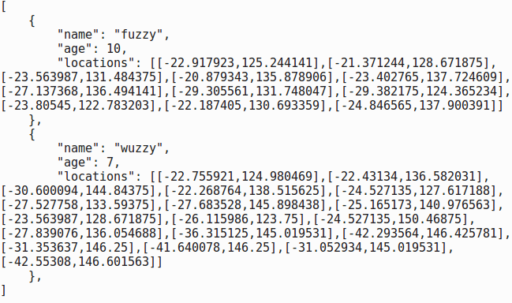

Storage
Jeremy Leipzig
Department of Information Science
College of Computing and Informatics
Drexel University
Some themes
Data is being produced faster than it can be stored.
So, data stored should be "worth its weight,"
and how it's stored should reflect its natural structure,
in addition to expectations on how it will be used.
Where is most data stored?
Digital storage formats are relatively young (from around 1950),
but by capacity, these overtook analog in 2002,
and by 2007, 94% of all data was stored in digital formats,
with more than half of this present on disks.
The rate at which data is produced is growing exponentially,
and by 2011, only half of that produced had a permanant home.
So, while the cost of digital storage is always going down,
space will always be at a premium
and the data we store should be chosen carefully,
with its growing size motivating storage for efficient access.
Too many disks.
So now and going forward, most data is stored on disk,
but with personal data constantly growing, we should ask:
how many TBs is my digital footprint,
and how much disk space should I keep physically?
Hard drives are getting cheaper, but portability comes at cost,
with risks for damage in transit or loss.
This is why networks and the cloud exist, but what is the cloud?
What is the cloud?
Is cloud data actually stored ephemerally in space? NO!
A cloud is just a system of disks on servers networked to you.
Most likely, your cloud is distributed across multiple drives,
possibly in a warehouse in Chicago or deep underground!
As digital footprints become larger, more will be cloud-based,
convenient for access and the security of data redundance.
Is personal data safe in the cloud? There are many opinions,
and digital footprint safety is perhaps just as important.
Storage systems
Generally, on a machine there is some type of file system.
When storing files, it is best to be consistent and organized.
- Some good-hygiene practices:
-
Keep code in separate directories from data.
-
Don't put too many files in one directory.
-
Organize files into directories by their contents.
-
Don't replicate files for multiple uses—just link!
-
If it doesn't get used often, compress a file.
-
Delete intermediates, use a pipeline
Storage formats
Let's go over some common data formats that exist in the wild.
Most file types have associated a file extension, e.g., .txt,
but these simply indicate format type, are aren't necessary.
While there is no such thing as "plain text" (recall utf-8),
with a text file (.txt) there is no expectation of structure;
there might be different data inside (e.g., text and numbers),
but with no guarantee of presence or placement in file.
Text files—can you find the structure?
Ordered arrays
These are perhaps the simplest form of structured data.
Matrix arrays (2D, e.g., .csv or .tsv) have rows and columns,
which rigidly assume all rows have the same width.
This make ordered arrays dense data objects,
both in storage and in memory while programming.
Header labels generally indicate column contents.
Important: it's best to have columns as attributes of rows!
I.e., each row should be an independent "record."
Why? Files are read left to right, from top to bottom.
If each column were a record (bad),
the whole file would have to be read before processing.
This has severe memory implications when handling large data.
So... images are are 3D arrays!

Associative arrays
A simple array ordering isn't always appropriate data structure.
Vectors are dense—you have to be consistent with columns.
Suppose a scientist is gps tracking Koala bears,
and along with names and ages, they record lat-lon sequences.
The earlier-tagged animals will have more data points,
and the longer the experiment is run, the more points will exist.
In order to store each Koala as a record, we need flexibilty.
Associative arrays
Associative arrays are characterized by key-value pairs.
A common encoding is Javascript Object Notation (.json),
and programming languages have assoicative array objects.
A key is just a name for access, a value can be anything,
and they can next data heirarchically.
In our example, each Koala could be its own associative array.
Keys for name, age, etc., provide access to text and numbers,
but now a key "locations" values a vector of coordinates,
and the lists can be different sizes!
Associative arrays (JSON)

Schemas
Associative arrays are well-characterized by flexibility,
but to be navigable, should have consistent structure.
I.e., each record should have a consistent form, or schema.
In our example, each record had three and only three fields,
and while flexible, values were consistently in place.
Suppose now that the scientist wished to track joeys,
and that not all koalas have had any children.
good data hygiene in a new "children" field
might reserve "null," or an empty array for non-parents.
Relational databases
The schema concept goes beyond files and program objects.
Relational databases are whole storage & retrieval systems.
They are based around tables of records linked by keys.
Key-links between tables make regular access efficient.
E.g., link a doctor's record to each of their patients',
These systems also simplify joins and set operations for data.
Common implementations include SQL, Oracle, and SAP.
Many are proprietary, but a good number are open and free.
NoSQL Databases
Key-value store
Document store
Graph database
Column-store
Recap
Data is being produced faster than it can be stored.
So, data stored should be "worth its weight,"
and how it's stored should reflect its natural structure,
in addition to expectations on how it will be used.
- Next time: Description
-
Letting data "speak,"
-
summarization,
-
and exploratory data analysis